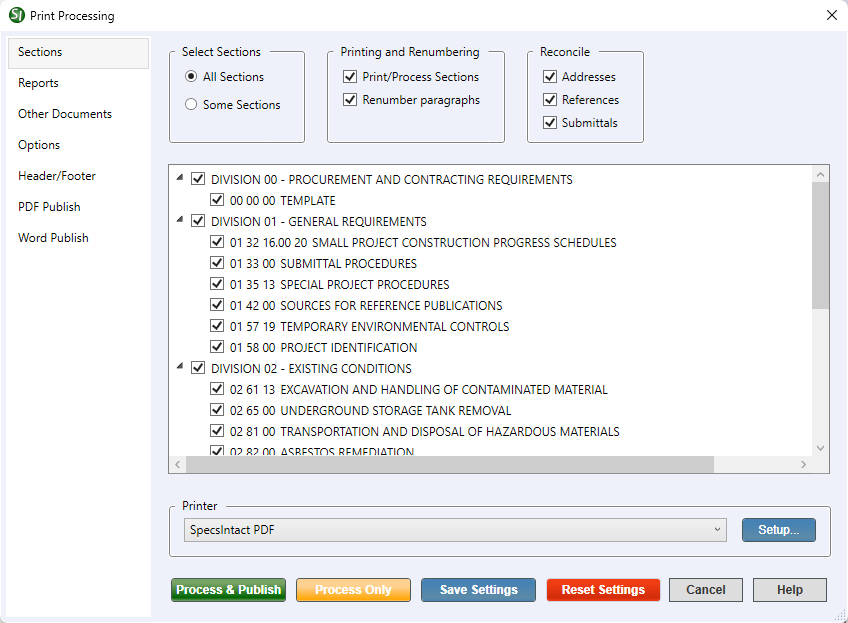

This command can also be executed from the SpecsIntact Explorer's Toolbar, Right-click menu, or by using the keyboard shortcut Ctrl+P.
The Sections tab gives you precise control over which Sections of your project are included in the print or publishing process. You can choose to print All Sections or Some Sections, and your selections here will directly influence the list of Sections displayed below. Beyond just selecting Sections, this tab also provides crucial processing options like Print/Publish Sections, Renumber Paragraphs, and Reconcile Sections.
 The available and default print processing options in SpecsIntact differ between Jobs and Masters, reflecting their distinct purposes and requirements.
The available and default print processing options in SpecsIntact differ between Jobs and Masters, reflecting their distinct purposes and requirements.
 If you selected one or more Sections in the SpecsIntact Explorer's Contents panel, the Some Sections option will be automatically selected and displayed below.
If you selected one or more Sections in the SpecsIntact Explorer's Contents panel, the Some Sections option will be automatically selected and displayed below.
 While you have the option to unselect the reconciliation processes, it's strongly recommended to keep them enabled. Disabling these processes could lead to inconsistencies or errors in your project's Addresses, References, or Submittals, potentially impacting the overall integrity of the project.
While you have the option to unselect the reconciliation processes, it's strongly recommended to keep them enabled. Disabling these processes could lead to inconsistencies or errors in your project's Addresses, References, or Submittals, potentially impacting the overall integrity of the project.
 Click the tabbed commands on the image below to see how to use each function.
Click the tabbed commands on the image below to see how to use each function.

- Select Sections - Provides the options to process all of the Sections in your project or precisely select the Sections you wish to include.
- All Sections - Provides the options to process all of the Sections within your project. When choosing to Process and Print a selected project directly from the SpecsIntact Explorer, All Sections is selected by default.
- Some Sections - Provides the control to process a specific subset of your project's Sections by letting you check or uncheck individual Divisions or Sections. If you've already selected one or more Sections in the SpecsIntact Explorer, this option will automatically be chosen, and the displayed list of Sections will reflect your prior selections.
- Printing and Renumbering - Provides control over the generation of Sections and the renumbering of paragraphs for printing and viewing. Both are checked by default and typically are not unselected.
- Print/Process Sections - Provides the option to either generate the Sections for printing or viewing, or skip their generation.
- Renumber paragraphs - Remains available primarily for backward compatibility with projects created before the introduction of Automatic Paragraph Numbering. It ensures that older Sections, which predate this automatic functionality, can still be properly processed and displayed, preserving their original formatting and numbering.
- Reconcile - Provides an automated process to verify and resolve Addresses (Organization names), References, and Submittals used within your Job's Sections. It can also remove any that aren't used, ensuring your project remains accurate. These changes are saved to the print and Processed files (.prn), so your actual Section (.sec) files remain unchanged. This process enhances the Quality Assurance Reports by listing any discrepancies found, giving you the chance to correct reported errors.
Process and Print/Publish common controls
The common controls for Process and Print/Publish appear consistently across all tabs, providing a unified experience.
- Printer - Provides the option to select a different printer while displaying the printer details. The last selected printer becomes the application's default printer.
- Setup button - Opens the Print Setup window, making it simple to choose your preferred printer, define the paper Size, Source, and Orientation, and even access networked printers. The Properties button allows you to change options based on the selected printer, such as the number of copies to be printed and to enable duplex or color printing, etc.
- Process & Publish / Process & Print button - Processes the Sections and applies the selections made on each tab, then sends a copy to the selected printer (e.g., hard copy or PDF).
- Process Only button - Processes the Sections, applies your selections, and saves the results to the project's Processed Files folder for your review.
- Save Settings button - Saves selections made on each tab, except for Sections chosen for processing and printing. The next time the Print Processing window is opened, the saved selections will automatically be the new defaults (e.g., Reports, Options, Header/Footer, etc.). When saving settings that are used frequently, make those specific selections first, click the Save Settings button, and then make the additional selections you need but do not want to save as permanent defaults.
- Reset Settings button - Restores any custom selections on the tabs back to the default settings.
Standard Windows Commands
 The Cancel button will close the window without recording any selections or changes entered.
The Cancel button will close the window without recording any selections or changes entered.
 The Help button will open the Help Topic for this window.
The Help button will open the Help Topic for this window.
Additional Learning Tools
 Watch all of the eLearning modules within Chapter 4 - Process and Print/Publish and Chapter 6 - Correcting QA Report Errors and Discrepancies.
Watch all of the eLearning modules within Chapter 4 - Process and Print/Publish and Chapter 6 - Correcting QA Report Errors and Discrepancies.